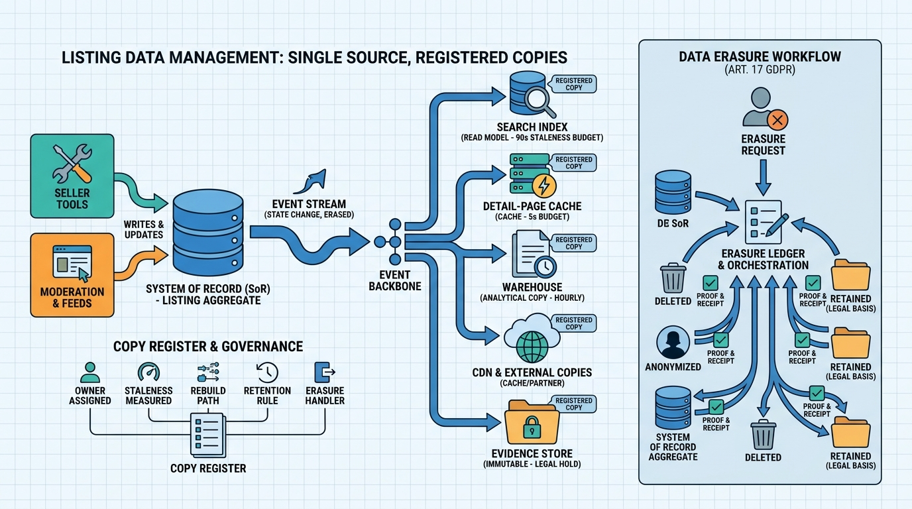

Part VII — PLATFORM: The Distributed System Underneath
System of Record and Read Models: Listing Data Management

Image generated by Google Gemini (gemini-3-pro-image-preview)
Part VII — PLATFORM: The Distributed System Underneath

Image generated by Google Gemini (gemini-3-pro-image-preview)